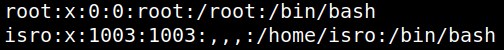

4.8 Identify users
1. Identify users on the system with “bash”. On the reverse shell run the following code.
$cat
/
etc
/passwd
|
grep
bash
Output:

There are two users with “bash”: “root” and “isro”.
Index